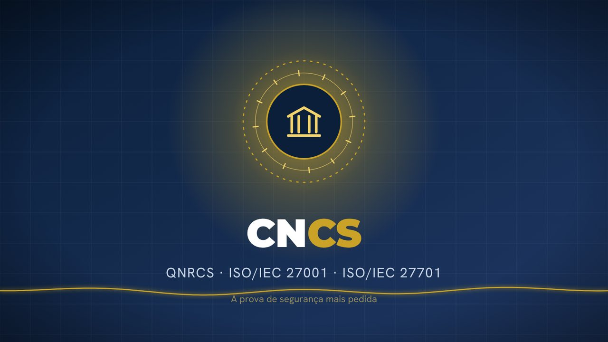

ARG
ARGARGOS › As normas em 4 minutos › CNCS e ISO
CNCS e ISO em 4 minutos: Uma prova não é um formulário
A norma internacional ISO 27001, com a ISO 27701 para a privacidade, é a prova mais pedida. É a referência, até chegar o esquema europeu para a nuvem. E uma prova não é um formulário.

- 0:00O concurso
- 0:12O Quadro Nacional
- 0:29A prova
- 0:43O quadro
- 0:56Ciclo SGSI
- 1:0993 controlos
- 1:19As provas
- 1:36Quem o pede
- 1:46O CNCS
- 2:03O que fazer
Dados-chave
- QNRCS Quadro Nacional de Referência para a Cibersegurança
- ISO 27001 gestão da segurança
- ISO 27701 gestão da privacidade
- QNRCS referência nacional do CNCS
- EUCS esquema europeu, em negociação
- Âmbito Sistemas e serviços
- Riscos Análise prévia
- Aplicabilidade Justificar cada medida
Transcrição
Texto completo da locução
0:00 · O concurso
Um concurso público. Um serviço na nuvem. Uma proposta impecável. E uma linha no caderno de encargos. Cumpre o Quadro Nacional de Referência?
0:12 · O Quadro Nacional
Em Portugal, a referência de cibersegurança é o Quadro Nacional de Referência para a Cibersegurança, do CNCS. Não há certificação nacional para a nuvem, por isso os clientes pedem a ISO 27001. Sem prova, muitas portas ficam fechadas.
0:29 · A prova
E uma prova não é um formulário. Definir o âmbito. Analisar os riscos. Justificar cada medida na declaração de aplicabilidade. Passar uma auditoria independente. E renová-la regularmente.
0:43 · O quadro
A norma internacional ISO 27001, com a ISO 27701 para a privacidade, é a prova mais pedida. É a referência, até chegar o esquema europeu para a nuvem.
0:56 · Ciclo SGSI
Um sistema de gestão da segurança segue um ciclo. Contexto e âmbito. Avaliação e tratamento dos riscos. Implementação das medidas. E auditoria e melhoria contínua.
1:09 · 93 controlos
A ISO 27001 contém 93 controlos em quatro temas. Organizacionais. De pessoas. Físicos. E tecnológicos.
1:19 · As provas
As provas num relance. ISO 27001: o sistema de gestão da segurança. ISO 27701: a gestão da privacidade. Quadro do CNCS: a referência nacional. E o esquema europeu, ainda em negociação.
1:36 · Quem o pede
Quem o pede? A Administração Pública. As entidades NIS2. A banca e os seguros. A saúde. E as empresas que compram nuvem.
1:46 · O CNCS
Por trás está o CNCS, autoridade nacional de certificação de cibersegurança. Publica o Quadro Nacional de Referência. Avaliadores independentes fazem as auditorias ISO. E a Europa negoceia o novo regulamento de cibersegurança e o esquema para a nuvem.
2:03 · O que fazer
O que fazer agora. Definir o âmbito, avaliar os riscos, planear a certificação e saber onde estão os dados sensíveis. O ARGOS mantém a aplicabilidade e as provas em dia, e liga-as à NIS2, ao RGPD e ao regulamento da IA, sem duplicar trabalho. CNCS e ISO: confiança que se prova.
Perguntas frequentes
O que é CNCS e ISO?
A norma internacional ISO 27001, com a ISO 27701 para a privacidade, é a prova mais pedida. É a referência, até chegar o esquema europeu para a nuvem. Em Portugal, a referência de cibersegurança é o Quadro Nacional de Referência para a Cibersegurança, do CNCS. Não há certificação nacional para a nuvem, por isso os clientes pedem a ISO 27001. Sem prova, muitas portas ficam fechadas.
O que exige CNCS e ISO?
Um sistema de gestão da segurança segue um ciclo. Contexto e âmbito. Avaliação e tratamento dos riscos. Implementação das medidas. E auditoria e melhoria contínua.
Quais são as datas-chave?
As provas num relance. ISO 27001: o sistema de gestão da segurança. ISO 27701: a gestão da privacidade. Quadro do CNCS: a referência nacional. E o esquema europeu, ainda em negociação.
Qual é a situação em Portugal?
E uma prova não é um formulário. Definir o âmbito. Analisar os riscos. Justificar cada medida na declaração de aplicabilidade. Passar uma auditoria independente. E renová-la regularmente. Por trás está o CNCS, autoridade nacional de certificação de cibersegurança. Publica o Quadro Nacional de Referência. Avaliadores independentes fazem as auditorias ISO. E a Europa negoceia o novo regulamento de cibersegurança e o esquema para a nuvem.
O que deve fazer uma empresa já?
O que fazer agora. Definir o âmbito, avaliar os riscos, planear a certificação e saber onde estão os dados sensíveis. O ARGOS mantém a aplicabilidade e as provas em dia, e liga-as à NIS2, ao RGPD e ao regulamento da IA, sem duplicar trabalho. CNCS e ISO: confiança que se prova.
Fontes oficiais
- ISO/IEC 27001
- ISO/IEC 27701
- Centro Nacional de Cibersegurança (CNCS)
- Fichas de regulamentação da Software in a Box
Continue com
 RGPD
RGPDRGPD em 4 minutos: O que mais se sanciona é o essencial
 EHDS
EHDSEHDS em 4 minutos: Para hospitais e fabricantes
 Regulamento da IA
Regulamento da IARegulamento da IA em 4 minutos: Portugal: aplicação direta, lei pendente
Locução e música geradas com inteligência artificial (art. 50 do Regulamento da IA). Informação geral, não constitui aconselhamento jurídico; situação a novembro de 2026, segundo as fichas de regulamentação da Software in a Box. Clipes de vídeo com licença Envato.
Para incorporar esta apresentação noutro site: <iframe src="https://argos.softwareinabox.eu/pt/normas/qnrcs-iso-27001/presentacion/?embed=1" width="960" height="540" allow="autoplay; fullscreen" title="CNCS e ISO em 4 minutos: Uma prova não é um formulário"></iframe> com uma ligação para esta página.
Disponível também em: EspañolDeutschFrançaisFrançais (Belgique)ItalianoNederlandsNederlands (België)Dansk